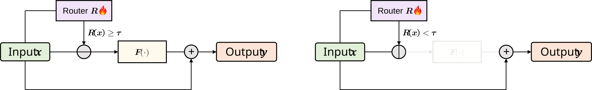
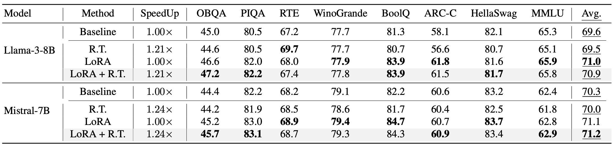

[EMNLP 2025] Router-Tuning: A Simple and Effective Approach for Enabling Dynamic-Depth in Transformers
Router-Tuning enables dynamic-depth inference by tuning only router-related parameters, preserving the efficiency benefits of Mixture of Depths while avoiding the cost of full-model dynamic-depth training.

Introduction
This is the official implementation of the paper Router-Tuning: A Simple and Effective Approach for Enabling Dynamic-Depth in Transformers, accepted at EMNLP 2025. We provide a practical framework for efficient dynamic-depth training and inference in Transformers.
Router-Tuning enables dynamic-depth inference by fine-tuning only router-related parameters. Compared with standard full-model dynamic-depth tuning, it significantly reduces training cost while keeping model quality competitive.
News
- Aug 2025: Router-Tuning accepted to EMNLP 2025 main conference.
- Oct 2024: arXiv preprint and code release.
Why This Repo
Traditional transformers execute a fixed number of layers for every token, which wastes computation on easy tokens.
Mixture of Depths (MoD) addresses this by dynamically skipping less important computations, but two practical issues remain:
- Existing methods usually tune the whole model, causing high training cost.
- Aggressive skipping can hurt quality if routing is not well calibrated.
Router-Tuning tackles both by focusing optimization on routing components and introducing routing strategies that better preserve performance-efficiency tradeoffs.
Results
Router-Tuning improves the efficiency-quality tradeoff over full-parameter dynamic-depth tuning baselines while keeping routing behavior more stable and interpretable.
Main Results
Router-Tuning consistently improves the efficiency-quality tradeoff over full-parameter dynamic-depth tuning baselines.

Expert Routing Analysis
Router specialization becomes clearer after tuning: the model learns more stable token-to-layer routing patterns.

LoRA Compatibility
Router-Tuning can be composed with LoRA-based adaptation for a better efficiency-performance balance.

Core Methods
The method focuses optimization on routing components and uses dynamic-depth attention-style execution to preserve the performance-efficiency balance.
Router-Only Fine-Tuning
Tune router-related parameters instead of full-model updates.
Strongly reduces optimization cost for dynamic-depth adaptation.
Attention-Based Dynamic Depth
Uses attention-based routing granularity to improve compute and memory efficiency.
Preserves output quality under dynamic-depth execution.
Quick Start
The repository is now Hugging Face first. The default launcher uses Qwen/Qwen2.5-7B and
patches routing behavior at runtime.
Installation
Prepare Data
Put raw datasets under data/raw/ using the expected subdirectory names:
vicuna_sharegptevol_instructslim_orcameta_math_qaevol_code_alpacaalpaca
Run Router-Tuning
Preferred model loading is Hugging Face first, with Qwen/Qwen2.5-7B as the default base model.
Hugging Face Example
Training Knobs
model_name_or_path: Hugging Face model ID or local model pathrun_name: output folder aliastrust_remote_code: defaults toFalserouter_layers: number of deeper routed layerstarget_capacity: target activation ratio for regularizationgranularity:attn/mlp/blockxsequence/token
Repro Checklist
- Python 3.10 environment with
pip install -r requirements.txt - Valid Hugging Face model ID or normal local model path
- Prepared data in
data/reformatted/*/data.jsonlordata/mixed/data.jsonl accelerateconfig matched to your hardwareNUM_PROCESSESand GPU memory consistent withmax_seq_length
Evaluation
Evaluation is compatible with EleutherAI/lm-evaluation-harness. For strict reproduction used in earlier experiments, see s1ghhh/lm-evaluation-harness.